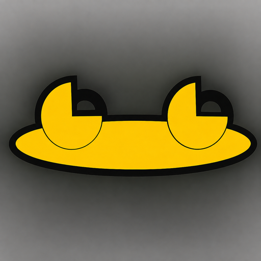
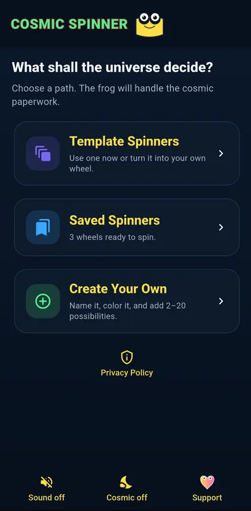
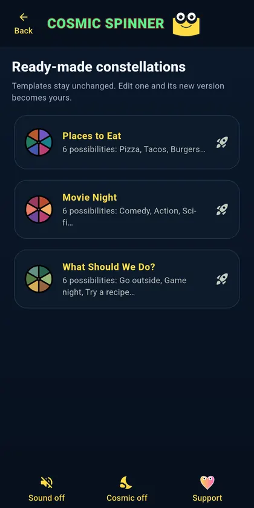
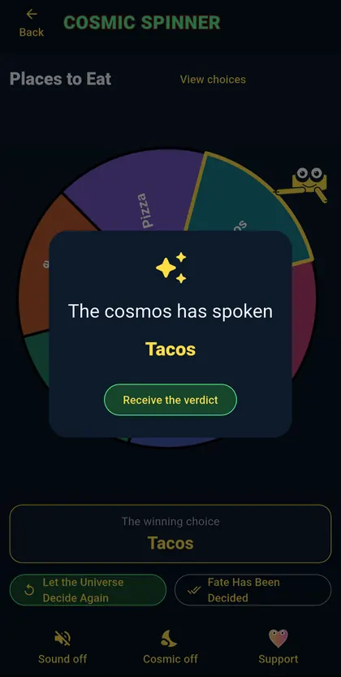
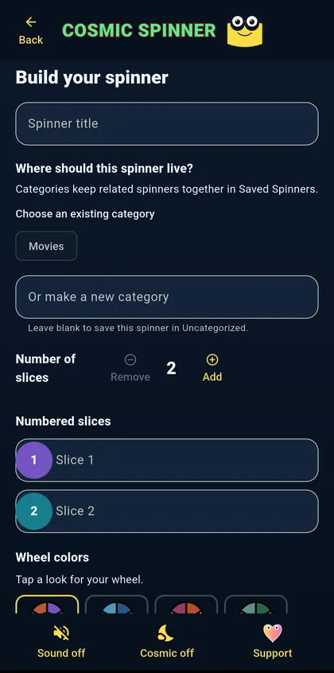
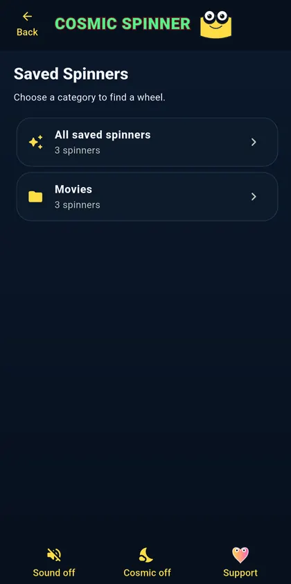
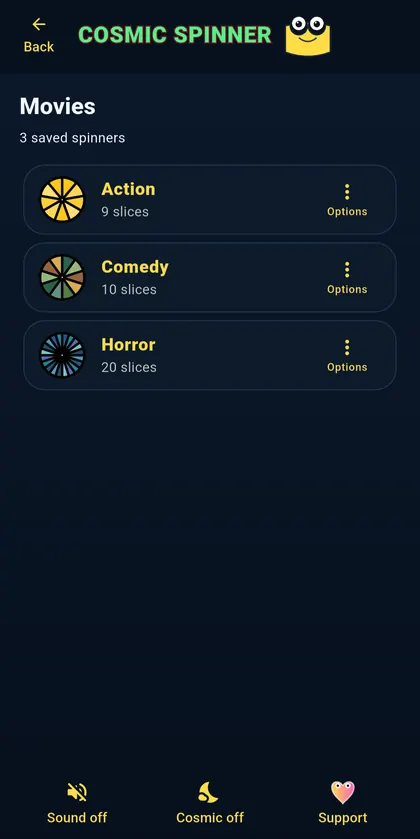

Android · APK download listed
Cosmic Spinner
Build a wheel, give it your choices, and let a yellow cosmic frog settle the matter.
View APK download & installation ↓ Privacy & permissions ↓Decisions without the committee meeting.
- Create your ownBuild wheels with two to twenty choices and a range of wheel colors.
- Save favoritesKeep useful spinners, search them, and return whenever indecision strikes again.
- Starter templatesBegin with ready-made choices or make something entirely your own.
- A fair spinThe selection engine gives every slice an equal chance while the frog handles presentation.
Why this one? Keep your favorite decision wheels handy without creating an account.
See Cosmic Spinner in action
Pick a template, build your own wheel, save favorites, and see where the spin lands.






Direct Android download
Get Cosmic Spinner
Free, always. No ads, subscriptions, or paid unlocks.
Only public releases published by Frogdadday appear here.
Published APK record · v1.0.2 · October 22, 2026
What this build offers: Custom choice wheels, saved favorites and one-tap spins. This is a feature summary, not a claim about what changed since the previous version.
- APK SHA-256
233fca614355d3aa5e1f57daf828459ec68ae344c058dc193017337f4e038dec- Signing-certificate SHA-256 fingerprint
53:DD:1C:E7:E8:24:70:A3:56:B6:CC:2F:A5:9D:9E:08:C6:6E:65:A2:36:29:62:CF:CD:A3:C0:2C:77:5F:EB:64
These identifiers were extracted from the published APK and its file SHA-256 checked against GitHub's digest on October 26, 2026. A public Android SDK signature audit passed the file, package and version checks on October 22, 2026. Neither check proves that this is the intended original signing key, confirms Play upgrade compatibility or substitutes for a security review. Fingerprints can change between releases.
Browse official Frogdadday GitHub Releases ↗ if the live download check does not load.
Installing an APK on Android
- Use the download button above when a public APK is available, or open the official Releases page linked above.
- Open the file. Android may ask permission to install apps from your browser or file manager.
- Review system warnings; proceed only when you trust the source. Turn off the extra installation permission afterward.
Website APKs do not receive Google Play automatic updates. Updating an installed app requires a compatible Android package and signing certificate.
This page checks whether a public APK exists; it does not independently verify the file's safety or signing certificate.
Your choices stay yours.
Saved spinners stay on the device. There are no ads, accounts, subscriptions, or locked features. Check the section above for current APK availability.
Privacy & permissions
Saved wheels, drafts, and preferences stay in local app storage. The policy covers permissions, backups, and the optional crisis-support message.
Read the full privacy policy